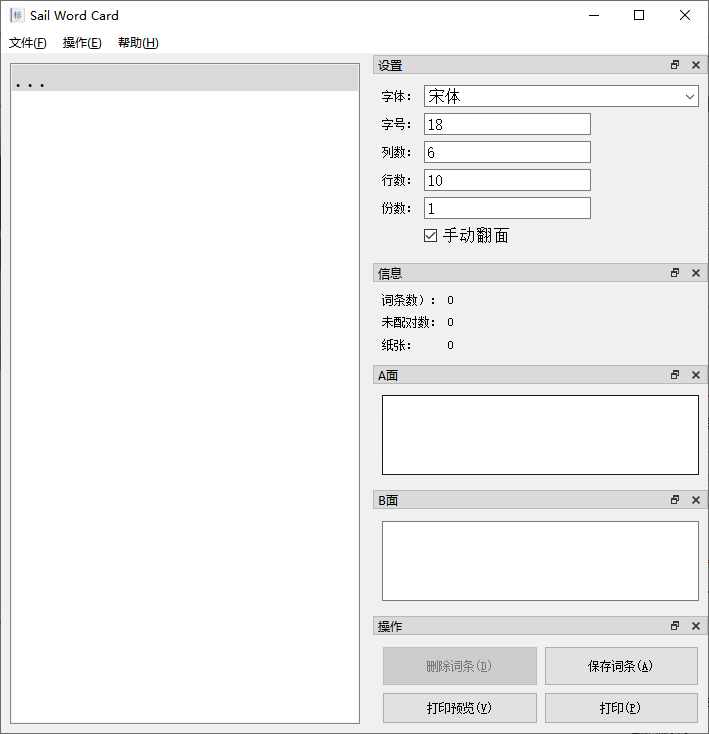
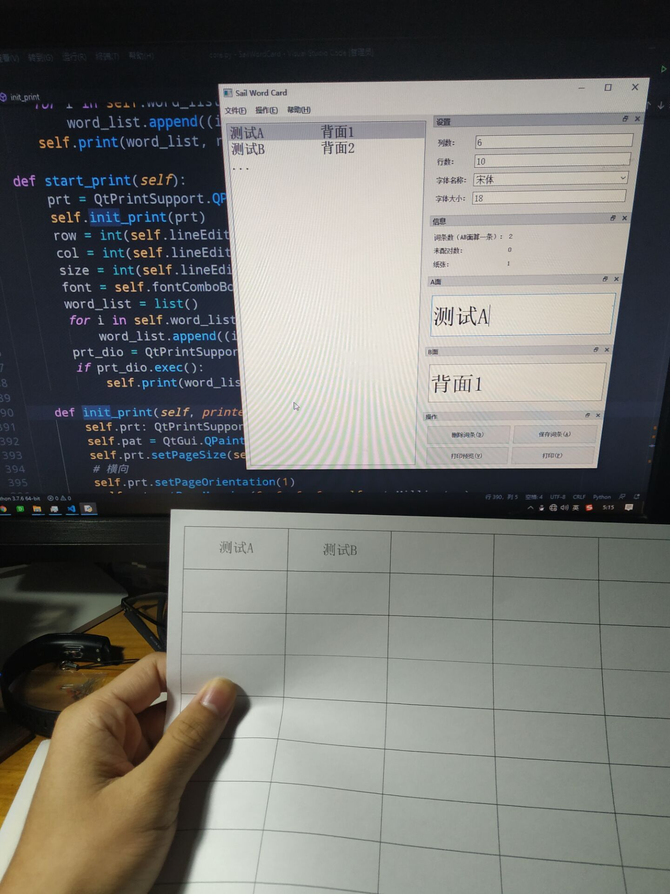
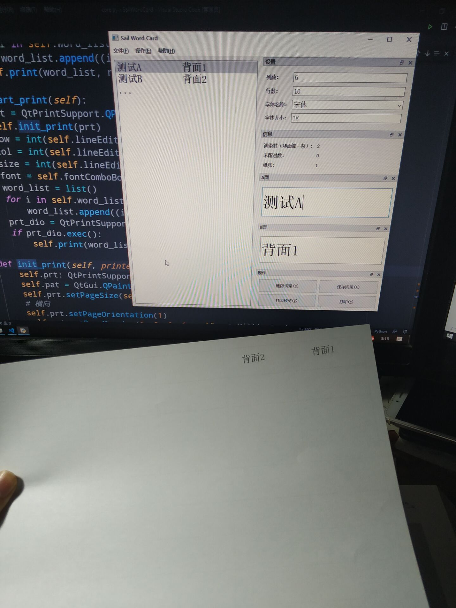

Sail Word Card是自由软件，基于GUN GPL2.0开源许可协议发布,意味着您可以自由运行、复制、分发、修改并且改进这款软件；本计算机程序受著作权法和国际公约的保护，并且本软件不提供任何形式的担保，使用时请严格遵守当地法律规章制度。
Sail Word Card目前只能运行在Windows平台上，以后会推出跨平台的版本，意味着可以安装到任何支持运行Python和PyQt的设备。
最新版本：1.1.0
下载地址：百度网盘 提取码：115m
   emm..鄙人技艺不高，不会写网页,请谅解...